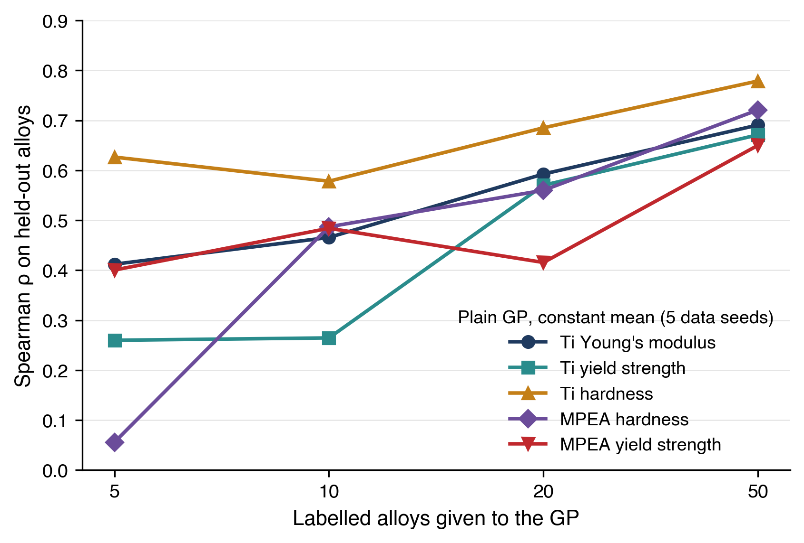

MATERIALS SCIENCE & ENGINEERING
TEXAS A&M UNIVERSITY
Department of Materials Science and Engineering
3

Plain GP, ρ on held-out alloys
5 labels: 0.06 to 0.63
10 labels: 0.26 to 0.58
50 labels: 0.65 to 0.78
mean of 5 data seeds